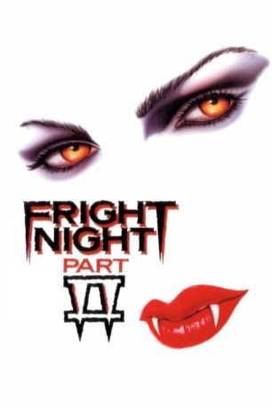
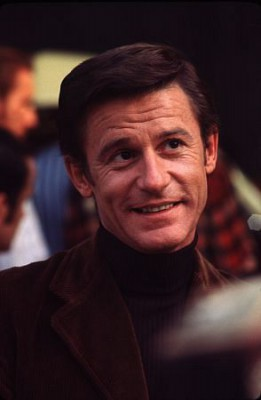

#6144 Fright Night 2 - Mein Nachbar, der Vampir
Alternativ: Fright Night Part 2
 
 IMDB-Wertung: 5.9 / 10
IMDB-Wertung: 5.9 / 10  Metascore: 0
Metascore: 0 
Drei Jahre sind vergangen, seit Charlie Brewster und der Fernseh-Horror-Moderator Peter Vincent den Vampir aus Charlies Nachbarhaus getötet haben. Inzwischen hat Charlie auch mit Alex eine neue Freundin, als plötzlich die mysteriöse Regine sich in sein Leben drängt. Wie sich herausstellt ist sie die Schwester des getöteten Vampirs und ist nun mit ihrer Vampirbande auf Rache aus...
Jahr: 1988
Dauer: 103 Minuten
FSK: 16
Land: USA Studio: New Century Vista Film CompanyTonspuren:
Untertitel:
Auflösung: 1080p (1920x816) Größe: 8284 MB
Genre: Thriller, Horror, Komödie
Regisseur:  Tommy Lee Wallace
Tommy Lee Wallace
Drehbuch: Bonnie Turner
Soundtrack:
Darsteller:
-  Roddy McDowall als Peter Vincent
- William Ragsdale als Charley Brewster
- Traci Lind als Alex
- Julie Carmen als Regine Dandridge
- Jon Gries als Louie
 Brian Thompson als Bozworth
Brian Thompson als Bozworth- Merritt Butrick als Richie
- Ernie Sabella als Dr. Harrison
- Matt Landers als Mel
- Rochelle Ashana als Art Major
 Alexander Folk als Sergeant
Alexander Folk als Sergeant- Scanlon Gail als Watch Captain
 John Lafayette als Bartender
John Lafayette als Bartender- Jennifer Joan Taylor als Secretary / Receptionist
 Bob Bergen als Additional Voices , uncredited
Bob Bergen als Additional Voices , uncredited- Russell Clark als Belle
- Josh Richman als Fritzy
- Karen Anders als Mrs. Stern
- Blair Tefkin als Bernice
- Grant Owens als Jailor
- Gary Allen als Mr. Newberry
- Brad Koepenick als Hip Young Guy
- Neith Hunter als Young Admirer
- Ed Quinlan als Newscaster
- Jill Augustine als Coed
- Gar Campbell als Director
- Ed Corbett als Stagehand
- Robert Jenkins als 2nd Stagehand
- David Efron als Orderly
- Dinah Cancer als Exploding Vampire , uncredited
Datei: X:\2-Dilogie(A-F)\Fright Night\Fright Night 2 - Mein Nachbar, der Vampir (1988, FSK16, 1920x816).mkv seit 09.05.2017
Festplatte: HD Collection-2(A-Z)-3(A-M)
 Alle Filme aus Gruppe '2-Dilogie(A-F)\Fright Night'
Alle Filme aus Gruppe '2-Dilogie(A-F)\Fright Night'